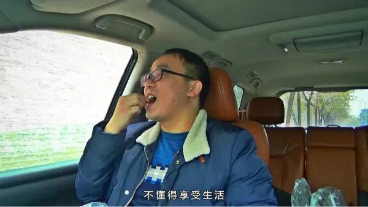
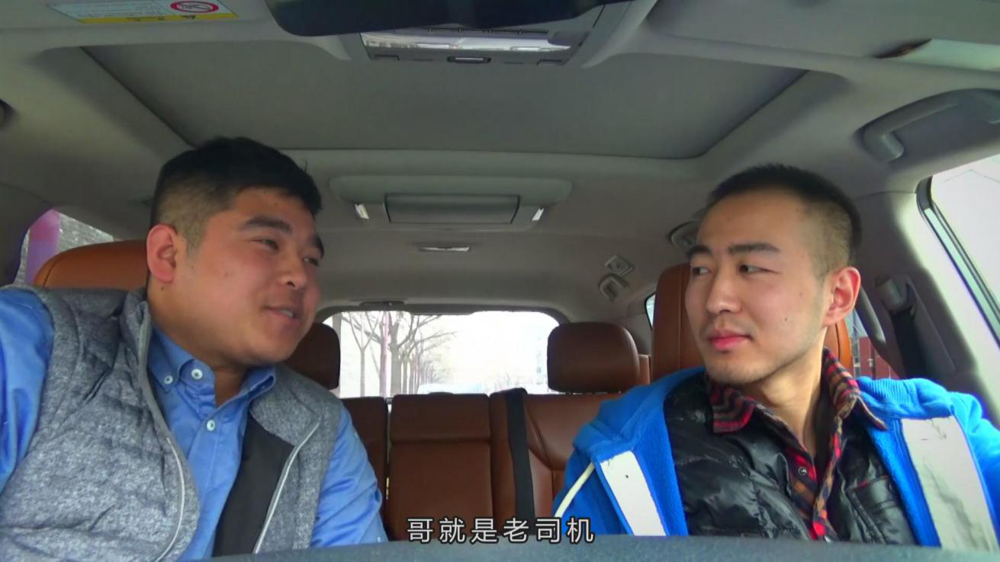
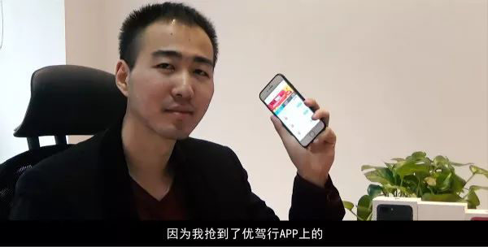
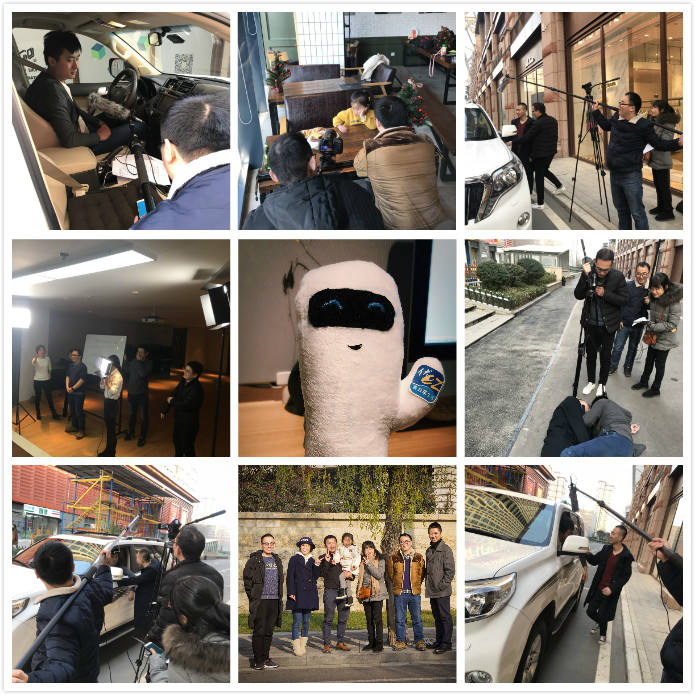

优哥是谁
经常围观优驾行easy APP热播频道的小伙伴们一定发现了，最近半年多来，优哥系列原创视频从无到有，不断推陈出新，目前每周都能维持3个短视频的更新频率，始终保持着版块的高热度， 可以说是非常厉害了！
那么这位很厉害的“优哥”到底是谁呢？
今天小编就带大家走近优哥，讲讲拍视频的那些事儿。
小变化，大成长
优哥原创视频在初始阶段，只有视频编辑王洪恩一人单打独斗，因其善用自带喜感的山东方言配音的缘故，将栏目命名为“优哥叨逼叨”，初期视频主要通过剪辑影视题材并与公司业务巧妙结合的形式进行制作。
后来随着制作团队不断壮大，又从中开辟出一档新栏目——“优哥侃新闻”，专门用来趣聊国内外新近发生的新闻，选材倾向于交通出行类，尤其注重发掘陕西本土新闻，开启优哥插科打诨模式给出栏目自己的观点。
“优哥叨逼叨”栏目则一改之前的制作思路，以安全文明出行为视频立意出发点，力求从发生在我们身边的不当却又容易被忽视的出行习惯中寻找创意点，设计情节并给予观者正确启示。
细心的小伙伴可能还留意到了“优哥叨逼叨”中的一档隐藏栏目——“优哥街访”，一般为3人带问题出街，对路人开展随机访问。“优哥街访”自开播以来，数次以有趣的话题、路人无厘头的回答， 配合恰到好处的后期特效令人捧腹。
原创是优哥视频的核心生产力。
每周一，团队的7名成员都会开会讨论下周的拍摄计划，策划选题，设计剧情，选择演员……
除了固定的开会时间，头脑风暴可以说是无时不刻发生在他们的日常工作中，一个话题抛出来，一场脑力激荡就开始了，你一言我一语，思维碰撞，灵感激发， 一个个故事脉络就在一次次的讨论中逐渐清晰起来。

乱吐瓜子皮的乘客 | 饰演者：王洪恩
演员的诞生
团队有了，栏目有了，剧本有了，演员的问题怎么解决？
优哥原创视频的演员大多从公司挖掘，除了因连续主演两部视频男一号而被戏称为“铁打的男猪脚”的陈亮，“流水的路人甲”则采用了抓壮丁的形式。

社会老司机 | 饰演者：曹国壮
团队会根据剧本需要，挑选适合角色形象气质的公司同事，邀请其参演。王爱玲在其中起到了重要的外联作用，几乎所有的演员都是她组织动员来的。
可以说，公司里能演的、想演的都有机会来优哥原创视频展示演技。
因此，在这其中也诞生了多名戏精，王洪恩和李军就分别因塑造了“乱吐瓜子皮的无良乘客”和“吻戏穿越的酒驾司机”深入人心。

吻戏穿越的酒驾司机 | 饰演者：李军
化困难为动力
人生处处有挫折，拍摄视频也是如此，这时候必须逢山开路，遇河架桥。
刚开始优哥视频团队缺乏专业设备，为了让视频出街效果更好看，他们要么靠刷脸找视频圈里的朋友借，要么靠七字口诀——站直扶稳别发抖，要么靠自己亲手打造，曾屡次出镜的街访道具—— “小优”话筒公仔就是王爱玲一针一线缝出来的。
街访遭拒是家常便饭，被人拒绝的滋味并不好受。那么遭拒的理由是什么？是路人太冷？是话题太偏？还是我们还不够美……
痛定思痛之后，团队研究出了一套行之有效的街访小技巧，街访铁三角也在此情况下应运而生——程欢、毛萌鑫、王洪恩，笑容甜美的邻家小妹搭配耍宝小哥，亲和接地气，遭拒概率果然直线下降。
街访铁三角们的心态也由最初的害羞拘束逐渐放（穷）开（追）手（不）脚（舍），百（死）折（缠）不（烂）挠（打）。
视频拍摄过程中也少不了演员不配合的状况。
拍摄《手心行动》视频时，有一名年仅4岁的小朋友参演，这个年纪的孩童专注度有限，随着拍摄时间的推移，新鲜劲儿没了，小演员渐渐变得不太配合。
这时候视频团队里有经验的宝妈宝爸们站出来，纷纷使出哄娃的看家本领，才让小演员乖乖配合最终完成拍摄工作。
诸如此类的困难还有很多，但他们愿意寻找办法一一去克服。

铁打的男猪脚 | 饰演者：陈亮
优哥是你，是我
有人问：优哥是谁？
我想说：优哥是这个团队中的每一个人！
在这个团队中，我能感受到的是真诚、活力、默契、彼此信任和勇于承担，每一个人都在这里发光发亮。
新的一年里，优哥原创视频团队将用心制作更多更好看的视频呈现给优驾行easy APP的每一位用户。
小伙伴们，动动小手转起来哟！

优哥视频拍摄花絮（小优乱入）